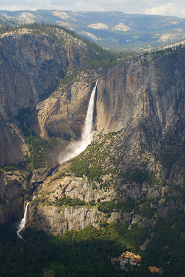
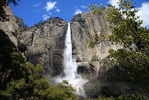

Yosemite is one of the largest and least fragmented habitat blocks in the Sierra Nevada
 The high country of Yosemite contains beautiful areas such as Tuolumne Meadows, Dana Meadows, the Clark Range, the Cathedral Range, and the Kuna Crest. The Sierra crest and the Pacific Crest Trail run through Yosemite, with peaks of red metamorphic rock, such as Mount Dana and Mount Gibbs, and granite peaks, such as Mount Conness. Mount Lyell is the highest point in the park, standing at 13,120 ft. The Lyell Glacier is the largest glacier in Yosemite National Park and is one of the few remaining in the Sierra Nevada today. The park has three groves of ancient Giant Sequoia trees; the Mariposa Grove, the Tuolumne Grove, and the Merced Grove. This species grows larger in volume than any other and is one of the tallest and longest-lived.
Source: Yosemite Wikipedia Page